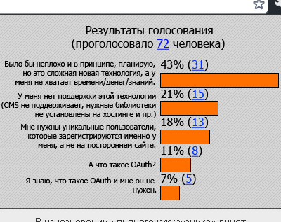
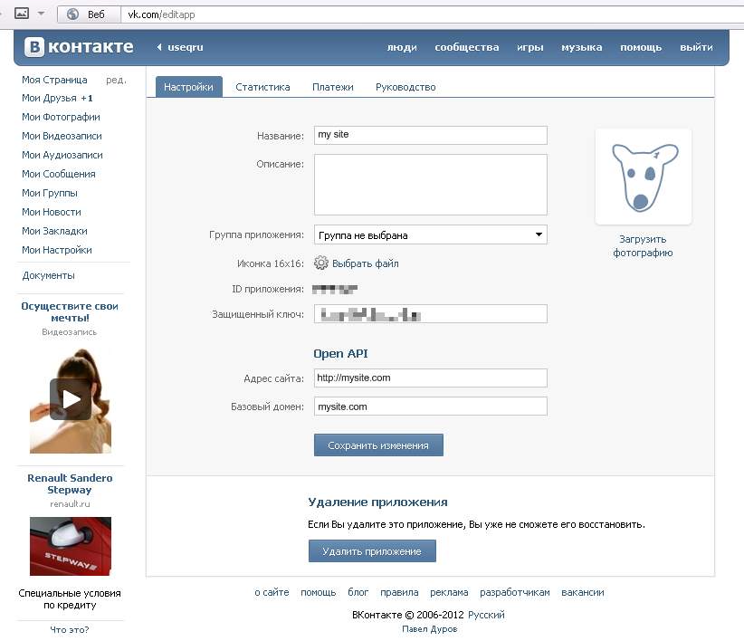

Думаю, не мне одному чрезвычайно надоели ресурсы, требующие регистрации по каждому поводу и без. С обязательной капчей, которая правильно введется только с пятого раза, с подтверждением по е-мейлу, которое обязательно свалится в спам и то — только через сутки. Придумывать каждый раз новую пару логин-пароль — забудется, вводить одно и то же на всех сайтах — небезопасно. Местами прокатывают пары вида «qwerty:qwerty» или «login:password», но, увы, далеко не везде. Надоело. Не счесть, сколько раз я, увидев надпись «только зарегистрированный пользователь может ****», просто кривился и закрывал вкладку, чтобы больше ни разу на этот сайт не заходить. Неужели администраторы ресурсов сами этого не понимают? А ведь технологии OAuth уже 6 лет, и 90% процентов интернет-аудитории имеет аккаунт минимум на одном из ресурсов, поддерживающих OAuth. Так почему кнопки «Войти через» нет на каждом ресурсе? Я установил опрос у себя на сайте.

Проголосовало немного (далеко не все мои пользователи имеют собственный сайт с регистрацией), но достаточно, чтобы появилась мысль написать эту статью, в надежде, что сайтов, использующих OAuth для авторизации, станет больше. Потому что:
Почему OAuth, а не OpenID?
Потому что OpenID практически бесполезен для тех целей, для которых декларирован. Это сугубо мое мнение, но оно опирается не на пустое место.
Во-первых, OpenID пользуются в основном «гики», процент которых в интернете не настолько высок, чтобы перестраивать под них сайты (за некоторым исключением, разумеется :) ) Почему так? Потому что для того, чтобы получить OpenID аккаунт, надо — его получить. Зайти на OpenID сервер и предпринять некоторые действия, чтобы заполучить некий, довольно невразумительный, набор символов. Который, несмотря на сложность (для простого пользователя) надо не забыть и вводить при случае, если на глаза попадется знакомая пиктограмма . Ну какой казуальный пользователь будет это делать? А с OAuth все намного проще — видит человек кнопку «Войти через ВКонтакте», нажимает, и… уже на сайте с правами зарегистрированного пользователя. «Будьте проще», — говорил классик, — «и люди к вам потянутся». Как в воду глядел.
Во-вторых, возможности OAuth далеко не исчерпываются аутентификацией и авторизацией. Получив в процессе авторизации токен, его можно использовать для дальнейшей интеграции возможностей социалки в свой ресурс — чтение/написание постов, доступ к френдленте и стене и многое другое.
В-третьих, OpenID активно пользуются спамеры и хакеры. Зачастую реализация OpenID аутентификации на ресурсе делается без особого внимания к известным его уязвимостям — по одному только описанию протокола на OpenID-провайдере или с помощью неизвестно кем и когда написанной библиотеки. К примеру, многие сайты не требуют со входящих по OpenID ввода капчи. И ничто не мешает злоумышленнику поднять свой OpenID-сервер, который будет подтверждать любой идентификатор и начать спамить доверчивый сайт автоматически сгенеренными идентификаторами. Кроме того, OpenID аутентификация, в сущности, не дает никаких гарантий клиенту. Она подтверждает лишь, что запрашиваемый пользователь действительно зарегистрирован на одном из OpenID-серверов — и все. Механизмы получения дополнительной информации о пользователе (email, имя, возраст) имеются, но мало кем поддерживаются. Можно, конечно, в нарушение идей OpenID, анализировать идентификатор и доверять только определенным OpenID-провайдерам (например, тем же социалкам). Но смысл, если почти все из них (за исключением ЖЖ, но он и по OpenID ровным счетом ничего не расскажет о пользователе) поддерживают OAuth, который позволяет получить намного больше информации? Так что со всех своих сайтов я вообще убрал поддержку OpenID.
Почему OAuth, а не виджет «Войти через»?
Нет проблем. Если вас устраивают функционал, дизайн и уровень безопасности виджета — то его воткнуть в код на самом деле намного проще — можете дальше не читать.
Как это работает
Если кому интересны все подробности, то см. ссылки выше. А вкратце — так:
Заходите на сервис-провайдер ХХХ, регистрируете там свой сайт, получаете код клиента и секретный код.
По нажатию кнопки на вашем сайте «войти через ХХХ» производится обмен запросами с сервером XXX, перенаправление пользователя на ХХХ для ввода пароля, логина и подтверждения передачи данных на ваш сайт и получения токена, с помощью которого у сервера ХХХ можно запросить дополнительные данные о пользователе. Конкретика зависит от реализации OAuth на сервис-провайдере — поддерживаемой версии протокола, поддерживаемых потоков и пр.
С помощью полученного токена с сервера ХХХ получаются имя, емайл, дата рождения, аватар и прочая информация, которая обычно и требуется при регистрации. После этого можно вызывать стандартную функцию по добавлению нового пользователя.
Почему сырой HTTP, а не куски кода с использованием OAuth библиотеки?
Потому что я порядком помучался, вытаскивая этот самый сырой HTTP зачастую и из кусков кода, иллюстрирующих использование той или иной библиотеки. Конкретная реализация OAuth на каждом сервере имеет свои тонкости, перед которыми может спасовать даже самая гибкая библиотека. Кроме того, веб-языков много, библиотек — еще больше, дать примеры на все просто нереально. А сырого HTTP (при наличии мозгов) вполне достаточно для использования любой библиотеки. Чего не скажешь об обратном случае.
Практические рекомендации по реализации
Разумеется, в первую очередь надо зарегистрироваться в соцсети, активировать аккаунт, ну и всё такое. Не торопиться. Некоторые сервера не сразу корректно обрабатывают запросы от свежезарегистрированных OAuth-клиентов. Здесь я расписал только успешные потоки, забывать про обработку ошибок — никак не стоит. Также я практически не уделил внимания аспектам безопасности — это тема отдельной статьи. Как минимум, везде, где можно передавать уникальный параметр в callback-url для каждого пользователя — это стоит делать (Основной callback адрес должен оставаться без изменений, а меняться — только параметр, иначе сервер не пропустит запрос. Особо обратите на это внимание, если у вас стоит mod_rewrite), как и пользоваться параметром state для передачи дополнительных данных callback-скрипту (там, где этот параметр поддерживается). Я все это пока оставил за скобками.
ВКонтакте
1. Идем сюда (http://vk.com/apps.php?act=add&site=1). Тип — «Веб-сайт». Вводим базовый домен и адрес сайта. На странице настроек получаем client_id (ID приложения) и secret_key (защищенный ключ).

2. Втыкаем в код кнопку вида
<a href="http://oauth.vk.com/authorize?client_id={client_id}&redirect_uri=mysite.com/vklogin&response_type=code" title="Зайти через ВКонтакте">Зайти через ВКонтакте</a>
Почему response_type=code, а не token? Потому что некоторые ресурсы не поддерживают response_type=token. Что такое vklogin? Это скрипт, который должен будет обработать ответ от сервера ВКонтакте, получить от него токен и добыть информацию о пользователе.
3. Что делает vklogin?
3.1. vklogin получает в get-параметрах (прямо в строке запроса) результаты авторизации. В случае успеха
http://mysite.com/vklogin?code=7a6fa4dff77a228eeda56603b8f53806c883f011c40b72630bb50df056f6479e52a
В случае неудачи
http://mysite.com/vklogin?error=invalid_request&error_description=Invalid+display+parameter
Соответственно, первым делом скрипт анализирует наличие code, достает этот параметр и выполняет
3.2. https-запрос (протоколом полагается POST, но ВКонтакте используется GET. Разницы немного, но имейте в виду) вида:
GET https://oauth.vk.com/access_token?client_id={client_id}&client_secret={secret_key}& code=7a6fa4dff77a228eeda56603b8f53806c883f011c40b72630bb50df056f6479e52a//полученный в параметрах код
3.3. и анализирует ответ. Любой ответ, кроме 200 OK сигнализирует об ошибке. В случае успеха мы получаем в теле ответа список параметров в формате JSON, содержащий access_token и user_id. После чего (мы же регистрируем пользователя) выполняется еще один GET запрос — обращение к методу users.get API ВКонтакте:
GET https://api.vk.com/method/users.get?uids={user_id}&fields=uid,first_name,last_name,nickname,screen_name,sex,bdate,city,country,timezone,photo&access_token={access_token}
3.4. В ответ на это (опять же в случае успеха) мы получаем опять-таки JSON список перечисленных параметров. Что нам и нужно было. Имя пользователя — в utf8, город и регион — в виде кодов, названия надо получать вызовом отдельного метода с укаазнием кода.
Полный список того, чего можно запросить, можно взять здесь (http://vk.com/developers.php?oid=-1&p=users.get). Полный список методов API ВКонтакте здесь (http://vk.com/developers.php?oid=-1&p=%D0%9E%D0%BF%D0%B8%D1%81%D0%B0%D0%BD%D0%B8%D0%B5_%D0%BC%D0%B5%D1%82%D0%BE%D0%B4%D0%BE%D0%B2_API).
...
Добавить оставшееся. отформатировать.